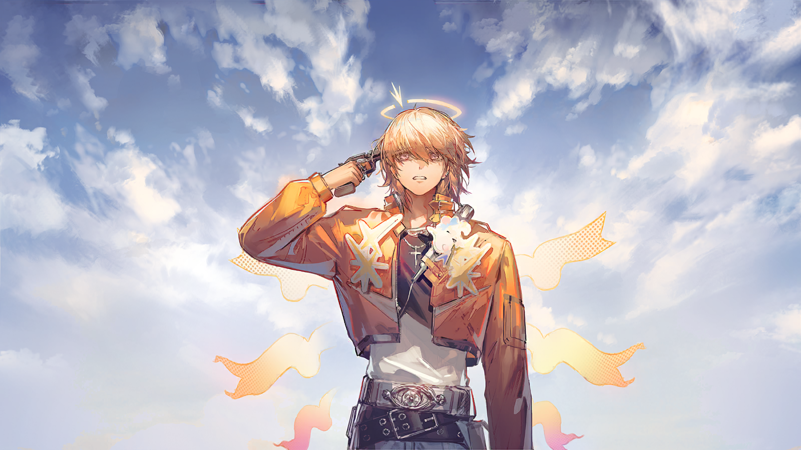
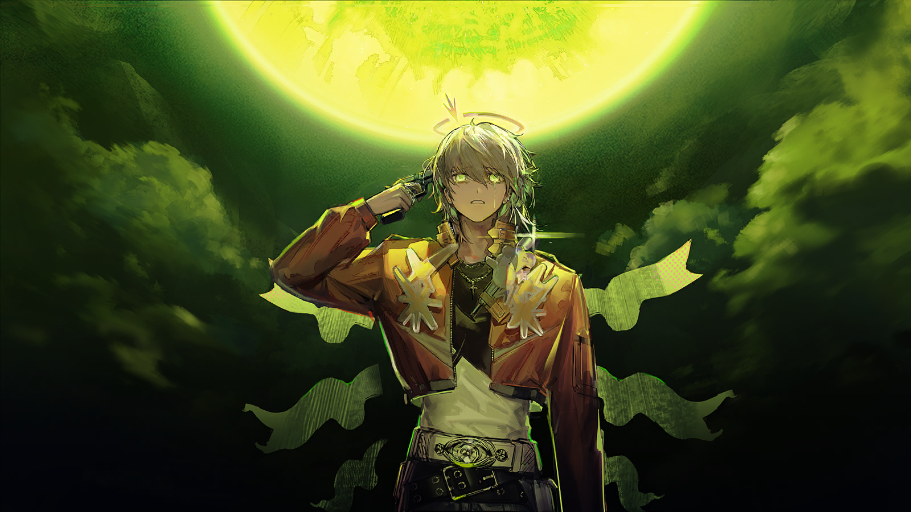
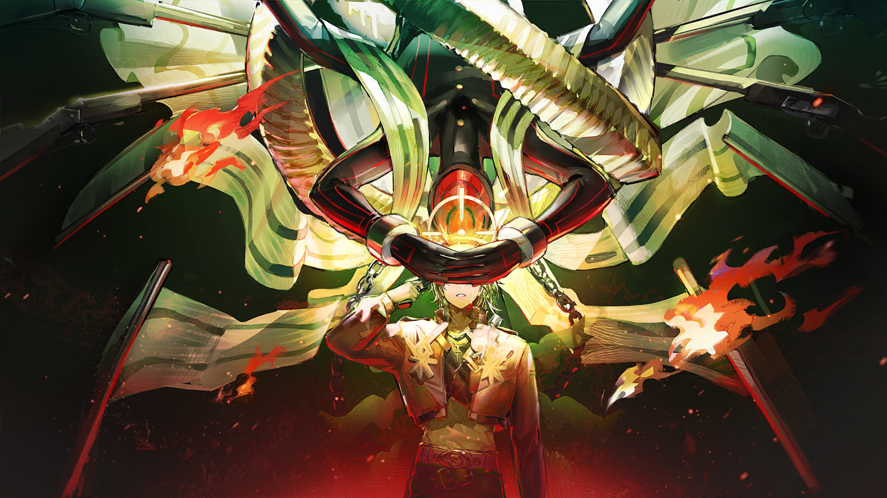
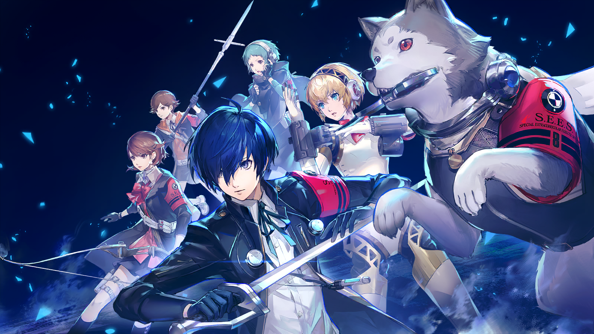

山岸风花
强大怪物的气息没有出现……今晚。

结城理
大家辛苦了，先休息吧。

山岸风花
是呢，明天还要去葬礼上帮忙……说不定，到时就会见到吉阿达小姐了。

虎狼丸
汪呼……

天田乾
虎狼丸也累了吧？唉，以前结束影时间里的调查之后，至少还可以休息一整晚……

埃癸斯
我不需要休息。大家休息时，我可以继续调查。

天田乾
但是，埃癸斯没办法像风花那样远距离感知怪物的气息吧？

埃癸斯
虽然无法感知气息，但根据“怪物出没的区域会出现异变”这一点，我可以对街道进行地毯式搜查，通过寻找异变区域来寻找怪物。

岳羽由加莉
欸！也就是说，埃癸斯想凭着双眼，一条条街找过去吗？
岳羽由加莉
这也太辛苦了……！

埃癸斯
能源补充没有问题。这点小事不算什么。

天田乾
就算埃癸斯你这么说……
天田乾
如果没能找到强大的怪物，埃癸斯这么努力地调查就只是无用功；如果真的找到了……埃癸斯独自面对那个怪物又太危险了。

埃癸斯
但是，大家都很担心吉阿达小姐吧。我也一样。
埃癸斯
我……想要做些什么。

结城理
埃癸斯，这样大家担心的就会是你了。

山岸风花
是啊……担心着埃癸斯会不会出什么事，我们怎么可能睡得着呢。

山岸风花
如果你坚持要去，那我就要和你一起。
山岸风花
我的辅助支援的力量，对于调查是必要的吧？

虎狼丸
汪……！

埃癸斯
虎狼丸也这么说……

岳羽由加莉
就当作是为了风花吧，埃癸斯。晚安。
埃癸斯
……好的。大家……晚安。

结城理
……虎狼丸？
虎狼丸
汪呜……

结城理
嗯，我大概知道你在担心什么。

结城理
明天出发时，我会提醒大家穿上作战服的。
结城理摸了摸虎狼丸，虎狼丸靠着他的膝盖，热烘烘的。
结城理
来这里之后，是不是还没给你梳过毛？

结城理
……等葬礼结束后，去买一把你用的梳子吧。
虎狼丸发出短促的哼鸣，蹭了蹭结城理的手，在单人床边趴了下来。
结城理坐到床沿，手搭在它的背上，和虎狼丸一起凝视着窗外初升的残月。
是这一天了，裘里奥站定，深吸了一口气。
吉阿达还没有出现，但她一定会来的，五分钟后、一刻钟后、一小时后。
当维韦塔安宁地进入那扇小小的、洁白的铁门时，他会和吉阿达站在一起，因为她和他一样，都爱着维韦塔。
将他们相连的事物比悲伤更纯净，比哀愁更光明，正如死亡也不能阻止维韦塔向欢乐许愿。
死者未曾放弃，生者岂能裹足不前？
他推开了身前巨大的门。
明亮的日光穿过空旷的殡仪堂顶层，照在了孤独的萨科塔前方。

裘里奥
嗯？已经到鸣铳环节了吗，宾客不是才刚入场……

裘里奥
怎么是从火化炉那边传来的……这不对吧！
裘里奥
嘿伙计们，这边是怎么了，告解车走火了？为什么东倒西歪的？
结城理
走火……倒是没有。

天田乾
是气球爆炸了……
裘里奥
等一下，这些绑在告解车上的气球，是要作为移动靶用来抽签的，这就……全都炸了？

？？？
我只是看这些告解车都伸着拍手板，习惯性地和它们击了个掌嘛……没注意到它们被彩带连在一起了……
埃癸斯
临时路线尚未设定完成，击掌启动后告解车互相冲撞，导致气球破裂、彩带拉断、绢花脱落……
？？？
好了好了不用念了……那个，气球，有备用的吧？给我个气筒，我来给气球打气，你们先修那些彩带……

裘里奥
大叔，孩子们干了整整一小时才做完啊！
？？？
我这不是来帮忙了嘛……好歹我也算是你的长辈，对我客气一点啊！你小时候我还抱过你呢！
裘里奥
抱歉啊大叔，我刚回国，对亲戚不太熟悉了，您是……？
菲利切
呃……我叫菲利切·高丢……
裘里奥
我们家有名字这么“有趣”的亲戚吗……？
菲利切
咳，我是维韦塔的前男友，十五年前分的手。
裘里奥
……
菲利切
好了我知道没人请我！但十五年前我和她差点就结婚了呢，她的葬礼我来一下也不过分吧……
菲利切
其实前几天从以前的同事那知道你回拉特兰了，我还想见见你的。不过想着葬礼上反正能见到，就没去找你。
裘里奥
……菲利切叔叔，你对我很熟悉吗？
菲利切
算不上，不过我知道葬礼你肯定会在。
菲利切
毕竟那天维韦塔牵着你来立遗嘱，就是我给你们见证的嘛。
小裘里奥
……
小裘里奥
呜……！
维韦塔
踩到什么了……老天，这里怎么有个小孩儿！
维韦塔
……噢！你是表姐家的那个孩子。嘿，记得我吗，刚才我们打过招呼。
小裘里奥
……
维韦塔
怎么不说话呀，你肯定会说话了吧？光环这~么亮。
维韦塔
用脸贴着我是什么意思？
维韦塔
……哦，共感吗？抱歉哦，我今天不想感受那么多。
小裘里奥
为什么……？
维韦塔
这是葬礼耶，我不喜欢这么强烈的场合。光太刺眼的时候想闭上眼很正常吧。
维韦塔
你好像很喜欢共感，怎么也跑出来了？
小裘里奥
开心，难过，想跑起来，然后累了……
维韦塔
……说起来，表姐和表姐夫没有试过让医生教你关闭共感吗？
维韦塔
算了，我在说什么呀。如果你能关掉，他们俩就不用那么发愁了。这个什么共感发育异常，也不知道是不是等你长大了就好了……
小裘里奥
我不想关掉。
维韦塔
你不想？你这么一丁点大，就知道自己想不想啦？
小裘里奥
……
小裘里奥
我喜欢大家。
年轻的女性像是受不了似的摇了摇头，拉起孩子的手抵在额头，用她自己的话说，“睁开了眼睛”。
维韦塔
……我怎么感觉不到你？
小裘里奥
……你担心我。
维韦塔
嗯，现在我确实非常担心你了。你完全是个笨蛋嘛，喜欢大家？所以把别人的感情全塞在脑子里，连自己在想什么都不知道了？
维韦塔
算了，骂一个生病的小鬼也没有用……但你这样不行哦，不能光是“喜欢大家”，也要大家喜欢你才有意义吧。
小裘里奥
怎么让大家喜欢我？
维韦塔
呃，你可真是问对人了，外公死了他们都差点不想告诉我呢……
维韦塔
……如果你能让他们开心，可能他们就会喜欢你了吧。
小裘里奥
好。我想让你开心，怎么做？
维韦塔
哇……你还真是个笨蛋啊。
维韦塔
……那等我老死了，你帮我在我的葬礼上开一场超级大派对吧。
维韦塔
喔喔，这个遗嘱不错。我最近交了个执行者男朋友，一直在想立个什么遗嘱比较好玩……就这个吧！
维韦塔
走走，我们回去找他，我把他丢在葬礼那边了，本来想一个人溜出来吃泡芙的……

裘里奥
……
裘里奥
发生过这种事……？
裘里奥
是为了……好玩？
菲利切
哈哈，维韦塔以前就是这样，很可爱吧。
裘里奥
那后来呢？她一直没有变更过遗嘱，一定是因为她也喜欢这个遗嘱吧？她不希望大家在她的葬礼上伤心，是这样对吧？
菲利切
这，呃，也许吧……

裘里奥
菲利切叔叔……你最后一次见到姨妈是什么时候？
菲利切
一两年前吧……
裘里奥
请别骗我，菲利切叔叔，求您了。
菲利切
……好吧，一月的时候，我去找过她一次，但她没开门。我没骗你。
菲利切
我对她说了很多话，我知道她都听见了，但她没有开门。
裘里奥
她什么都没说？
菲利切
……她隔着门对我说：“走开吧，菲利切，你说的话我一个字也听不清。”
菲利切
我没想到她会……你看，她甚至是一个偶尔会自己拒绝共感的人……
菲利切
……但那天最后，她隔着门问我……
菲利切
“菲利切，这是不是对我的惩罚？因为我总在试探，因为我毫不珍惜。所以这一次闭上眼睛，我就再也不能睁开了……？”
菲利切
那时我就知道结局了。她不是唯一一个，最近这种事太多了……
裘里奥
“知道结局”……是什么意思？
菲利切
……裘里奥，你……难道不知道？
裘里奥
我应该知道什么……？
菲利切
天啊……那我不会告诉你的。这本来就该封存……为了维韦塔的名誉。
裘里奥
菲利切叔叔……？
菲利切
别问了，裘里奥。我还得给你的气球打气呢……
年长的黎博利低下头，好像手里那个打气筒成了全拉特兰城最有趣的东西。
年轻的萨科塔茫然地环顾四周，那些异国来的孩子们僵硬地摆弄着手中的彩带或绢花，和他一样不知所措。
他们都听到了。裘里奥意识到。
他看向为首的那一个，名叫结城理的孩子没有避开他的目光，裘里奥试图从那双始终平静的眼睛中汲取一点勇气……
但他先在那双眼睛中看见了另一个身影。

吉阿达
……
吉阿达
珀拉找到我……
裘里奥
吉阿达。
裘里奥
维韦塔是怎么死的？

吉阿达
……

吉阿达
嗯。她是自杀，用自己的守护铳。
“砰——”
气球薄薄的胶皮抻开、延展、撑胀到几乎透明，轻快地迸裂了。
我想起爸爸死前的事。回到拉特兰后，我以为它会和很多事一样，被我忘记了。
灾变之前，爸爸已经病得不轻，灾变之后，他更虚弱了。我还是会给他讲笑话，但我已经不知道那能不能让他开心。
有时我甚至会觉得，过去我感受到的，是不是都是幻觉？这个永远担忧地看着我的男人，他曾有一天因我而幸福吗？
明明和我一样失去了共感，他却好像知道我在想什么，时不时在晚饭的餐桌上对我说起话来。
他说得很多，柔软的拉特兰口音像是被水草缠裹住的气泡，无法浮上水面。至少我有了很多时间陪他吃饭。
我还是找到办法带他去了之前联系的医院。医生还没到，我扶着他在那个精致漂亮的小花园里散了一会儿步。
那个人就是那时出现的。现在想想，也许那是个疯子，病人，神志不清的恶棍。
我们在一条小径迎面相遇，他穿着睡衣，看起来很悠闲。就像对我遇见的任何人那样，我对他微笑。他看看我，又看看父亲。
“萨科塔？”他问，举起手在头顶比划了一下，用一种像是期待的眼神看着我们。
父亲突然捏紧我的手，于是我扶他快步离开了。越过那个人的时候，我听见了一声嗤笑。我猛然意识到，他比划的是萨卡兹的角。
我们还是见完了医生，没有什么好消息，爸爸也说再也不想去那里了。
没过多久，爸爸就死了。最后一次我们闲聊，爸爸问我，杀过同胞的人，死后会去哪里？
我说我不知道，就算是没有杀过人的人，死后会去哪里我们也不知道啊。
如果杀害同胞是一项将死后的我们分开的道岔，那么杀害并非同胞的人呢？杀害罪犯呢？杀害驮兽呢？杀害欺骗人类的怪物呢？
父亲让我低下头，他紧紧捂住了我的眼睛，我的眼球都在发疼。他说，
“裘里奥，和我一起走吧。”
吉阿达
……裘里奥，裘里奥？你还好吗……？
裘里奥
吉阿达……为什么之前不告诉我？
握紧吉阿达的手，问出这个问题的一瞬，裘里奥就领悟了答案——
正因为他和吉阿达的争执，她不会将这件“不名誉的事”抛出在两人之间，变成武器。
他对吉阿达提出的那个问题实在是错得离谱，吉阿达分明是一个如此可靠的、保护着逝去之人的葬礼经纪。
声张着亲人的名义，紧攥着那个被遗忘的遗嘱，却从未真正见过死者的人又是谁呢？
在那个疲惫的夜里，道出真相的人其实是——

吉阿达
……抱歉，裘里奥，昨天把你一个人丢在这里。
吉阿达
至于维韦塔……

裘里奥
嗯，没关系，吉阿达，我已经明白了。你是对的。

裘里奥
还有什么我能为你做的吗，吉阿达？抱歉把这里弄成了这样……
裘里奥
宾客应该已经来得差不多了，后面的事就交给你吧。
结城理
裘里奥，你要去哪里？

裘里奥
我？我不会去哪里的，葬礼还没有结束呢……

吉阿达
裘里奥，你不去接待客人了吗？珀拉在那边帮忙，但是，你的派对……
裘里奥
吉阿达，菲利切和你说了吗？遗嘱的由来。
吉阿达
菲利切？是刚才那位先生？我没和他说上话，他担心你低血糖，去餐区拿食物了……
吉阿达
是他和你说了维韦塔的事……？
吉阿达
……不论缘由是什么，你完成遗嘱的内容都没有错。
裘里奥
维韦塔是在绝望中死去的……我这样对待她的葬礼，也没有错吗？
在轻快的音乐声里，裘里奥向着满场的气球、彩带、甜甜圈塔、贴满贴纸的礼炮挥手，他又笑了。
吉阿达
……我们讨论过这件事的。没有人能为死者代言，没有人知道她的想法，也许她会喜欢这样，也许她不会。
吉阿达
每一个安魂教堂的修士都知道，葬礼是为活人而存在的，之前我只是希望那个人是我而已。
吉阿达
但我只是个葬礼经纪，而你毕竟……

裘里奥
是维韦塔的亲人？
裘里奥
你言不由衷，吉阿达。
裘里奥
为什么你现在会对我说这些……因为我，看起来很可怜吗？还是因为你觉得你对我有所隐瞒，产生了补偿心……？
吉阿达
也许都有吧。
裘里奥
你真的不该待在这里了……

裘里奥
求你了，吉阿达，带着孩子们离开吧。

岳羽由加莉
裘里奥先生，我们可以帮忙的……！
裘里奥
你们已经帮了很多忙了……
裘里奥
好吧，那么最后再帮我一个忙。
裘里奥
不要看我……

吉阿达
裘里奥……你在做什么？！
裘里奥
其实我很久没用铳了……我好像很害怕，这是律法的作用，还是我真的在害怕……？
结城理
裘里奥，别这样做。
结城理
你不知道会发生什么。
裘里奥
我知道不会发生什么。
裘里奥
我的幻想……以为一切尚可挽留的梦。
裘里奥
吉阿达，你是对的，真希望我能早点明白你的话，“我们都已经改变了”。
裘里奥
那名执行者用铳指着我让我离开房间的时候，得知姨妈遗嘱的时候，回到拉特兰的时候，我很高兴。
裘里奥
这一定是——一切都尚未走到无可挽回地步的证明，就在我身边，也有人和我一样，拼命地想要挽留这一切……挽留我们的生活。
裘里奥
远离这里的时候，每一次想起拉特兰，我的故乡，洁白的城市，大地之上独一无二的奇迹，我的心中充满甜蜜、快乐和骄傲。

裘里奥
现在所有的快乐所有的骄傲都变成痛苦变成羞耻变成……困惑？
裘里奥
这一切到底是什么我们所有人欺骗了自己多久为什么睁开眼睛我身处在一个如此巨大的骗局之中？
裘里奥
我所触碰的心灵是真实的吗我的心灵是真实的吗我曾经以为自诞生以来只做到了一件事就是对自己诚实。
裘里奥
以每一个好人教给我的，以诚实，以良善，以对欢乐的爱，去见去行去记每一件触手可及的事。

裘里奥
即使如此，清白的生活也从未存在过。
裘里奥
行骗的人是最后从骗局中醒悟的。我们的生活已经永远结束了。
山岸风花
出现了……！这就是，那个怪物……
天田乾
博士说的……是真的……
“猜想是，你们所见到的那种怪物……”
“它们是精神的具象，自拉特兰人的心灵中诞生。”
“‘被触碰之人’的死因就是怪物的本质。”
“那不过是一种愿望的凝结。”
“死志的凝结。”
岳羽由加莉
它真是……被他吸引而来的？
岳羽由加莉
现在明明还是白天……
“满月”降临于殡仪堂的最高层，四周的景象随之扭曲，簇拥着弯下腰的巨大怪物。
怪物环抱着萨科塔，将他按进体内，那姿态可称温柔。
虎狼丸奔向结城理身侧，对着金黄的“满月”大吠不止。

结城理
那果然不是月亮……
吉阿达
月亮……？这……这是怎么回事？！

岳羽由加莉
欸？！吉阿达小姐，你能看见那个吗？
吉阿达
什么意思……？为什么周围突然变成这样了……

吉阿达
抓住裘里奥的……又是什么？
和吉阿达的疑问一同传来的，是葬礼场地一侧的宾客们或恐惧或惊讶的叫喊。

埃癸斯
……连拉特兰人也能看见了吗？

结城理
如果按照博士的推理，它是拉特兰人精神的产物……那么，怪物能够影响他们也就不奇怪了。

吉阿达
什么意思……？你们在说什么……这究竟是什么东西？！
结城理
别管这是什么了。吉阿达小姐，请你去确认客人们的情况。
结城理
不要让任何人靠近这里。
吉阿达
那你们呢？
结城理
我们去消灭它。
结城理
一定要救出裘里奥……
结城理
这场葬礼不会有第二名死者。

结城理
各位，上吧！